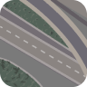

Mapas
Universidad La Salle Bajío
Editor
Rutas
FILTROS
FUNCIONES
Marcar área de influencia
Calcular área de una zona
Marcar lugar más cercano
ORIGEN
¿Dónde estás?
DESTINOS
Ver rutas
Default

Satellite